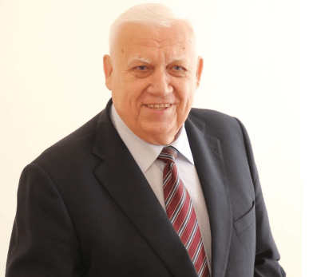
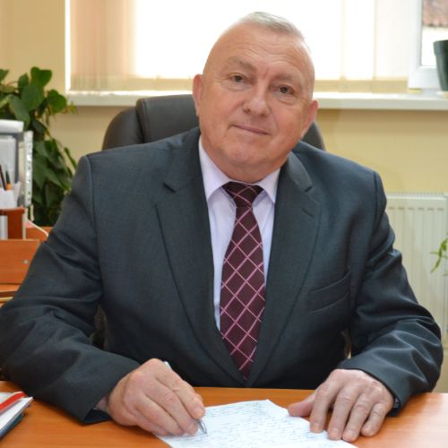
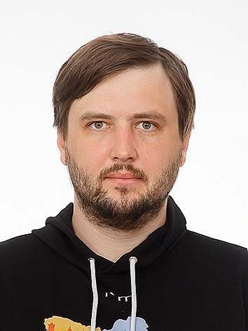

Голова оргкомітету

ШЕБАНІН В.С.
д-р тех. наук, професор, ректор Миколаївського національного
аграрного університету.
Члени оргкомітету
ШЕБАНІНА О.В.
д-р екон. наук, професор, декан факультету менеджменту
Миколаївського національного аграрного університету;

ОСМЯЧЕНКО В.О.
д-р. екон. наук, професор, професор кафедри економіки та
підприємництва, Державного університету
інформаційно-комунікаційних технологій, модератор освітніх
проектів SAP у TG Academy;
ЛОМАЧИНСЬКА І.А.
д-р екон. наук, доцент, завідувач кафедри економіки та
підприємництва Одеського національного університету імені
І.І.Мечникова;
ПОТРИВАЄВА Н.В.
д-р екон. наук, професор, завідувач науково-дослідного відділу
Миколаївського національного аграрного університету;

ТИЩЕНКО С.І.
канд. пед. наук, доцент, завідувач кафедри економічної
кібернетики, комп’ютерних наук та інформаційних технологій
Миколаївського національного аграрного університету;
ПАРХОМЕНКО О.Ю.
канд. фіз.-мат. наук, доцент, доцент кафедри економічної
кібернетики, комп’ютерних наук та інформаційних технологій
Миколаївського національного аграрного університету;
КУЧМІЙОВА Т.С.
канд. екон. наук, доцент, доцент кафедри економічної
кібернетики, комп’ютерних наук та інформаційних технологій
Миколаївського національного аграрного університету;

КРАЙНІЙ В.О.
канд. екон. наук, старший викладач кафедри економічної
кібернетики, комп’ютерних наук та інформаційних технологій
Миколаївського національного аграрного університету;
ЄМЕЛЬЯНОВ С.І.
PhD, старший викладач кафедри економічної кібернетики,
комп’ютерних наук та інформаційних технологій Миколаївського
національного аграрного університету;
ХИЛЬКО І.І.
старший викладач кафедри економічної кібернетики, комп’ютерних
наук та інформаційних технологій Миколаївського національного
аграрного університету;
КІНДЗЕРСЬКИЙ В.В.
провідний бізнес-аналітик, ГО «Інститут аналітики та адвокації»;

КОЛОМІЄЦЬ А.М.
WEB-розробник, Компанія «Geeksforless», Канада.
Відповідальний секретар:
БОГАТЄНКОВА О.Є.
старший викладач кафедри економічної кібернетики, комп’ютерних
наук та інформаційних технологій Миколаївського національного
аграрного університету.
Контактний телефон: (099)441-88-04